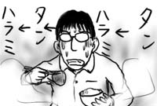

同僚のToddに誘われてモンゴルのTuva地方の音楽を聴きに出かけました．Toddの彼女のCarolynとその友達，Toddの母親とその友達の6人でジャネットジャクソンのポロリについて語りながら会場へ向かいます．
Tuva音楽の歌は，いわゆる普通の歌い方とはまるっきり異なっていて，特殊な発声法で同時に複数の声を出すらしいのですが，日本人の僕の耳には声明(しょうみょう)のように聞こえます．そんなわけで葬式に出席しても「僧侶のお経のグルーヴ感がすごい」と思いがちで，しかし場が場だけに口に出せない気味の僕に取っては，大手降って感想を述べるたってないチャンスと言えます(間違い)．
モンゴルからやってきたバンドメンバがモンゴル訛り(?)の英語で歌の説明をしてくれますが，ほとんどが馬について，というか馬の歌ばっかり！一つの弦楽器でいろんな音が出るのが単純におもしろかったです．鳥とか馬とかの鳴き声を全部口で再現できるのもすごい．それにお経が絡むのも新鮮な感覚でした(間違い)．
というわけでコンサートをおもしろく見終わった後，会場近くの「牛角」で晩ご飯．店構えや内装は日本のチェーン店とまるきり同じです．思わず油断してしまった僕は，つい日本にいる感覚で注文してしまったのです．こっちの人は，自分のものは自分で頼んであまりシェアをしないというのをすっかり忘れていました．そんなわけで，他のみんながサラダとかライスとかセットメニューでバラエティに富んだ食事をしている中，僕だけタンとハラミだけを延々食べ続ける羽目になりました．
バランスを保ちたいものです(心の)．